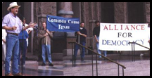

GRASS ROOTS
Maine elected to kick-start a movement
By Noah Bruce

Populist author and anti-corporate radio commentator Jim Hightower recently announced he will launch a national chautauqua tour starting this September in Maine. Chautauquas, which began in 1874 with a group of families on Lake Chautauqua in New York, are educational and entertaining festivals featuring speeches, music, and workshops, usually with some sort of political theme. Hightower's event will be no different. His message: Big corporations are ruining America.
We caught up with Hightower at his Austin, Texas, office for a little Q&A:
Phoenix: Why kick off the tour in Maine?
A: Maine has been a leader in the country on all kinds of innovative progressive
initiatives. Everything from your clean election initiative to your prescription drugs
initiative. There is such a pool there of good, strong progressive activists that it's
a logical place to start. In addition to that, basically we're starting in Maine because
the people of Maine wanted to start in Maine. They got it organized before others had in
the country. There's not even been a national announcement of this thing, yet people there,
as in other parts of the country like Atlanta, Los Angeles, Seattle, Minneapolis St. Paul
and others are moving to host chautauquas. People there were ready to go and so we're in
the process of working with them to have a terrific launching of this tour.
Q: Sounds good. I want to ask you a question about your message: What can regular
people do to combat corporate greed?
A: Well, get organized. Get to agitating. And the good news is there is terrific
grassroots activity and organization taking place and more often than not people are winning
in those battles against corporate power whether those are battles for a living wage, or battles
to protect a public hospital from privatization, or battles against a toxic waste dump.
The problem has been that we're not much connected. People on one side of town don't know
the people on the other side even though we're fighting one tentacle or another of the same
corporate beast . . . We can be stronger in a coalition effort than we can be separately,
and stay focused on what the real target is, which is corporate power. That just about every
issue that any progressive force is doing battle with comes down to corporate power.
Q: Has it always been that way? I know there's always been fat cats in American and
the working folks, but is the split much sharper now?
A: It is. Because the corporate elites and their puppets in Washington have
overreached. Now the issue of corporate power is not an abstraction. It is people's HMO. It
is their out-of-state bank that is gouging them. It is the take-over of state, local, and
national government by those powers enacting environmental policies against them. It is
somebody polluting their creek out behind their house . . . We've got to build a real movement
in the country, a real political movement that ultimately will express itself through political
parties. We're at the stage right now of trying to forge the alliances of the progressive groups.
Q: You're talking about new parties? The Green party? Or the two . . .
A: I'm talking about all of them, I'm talking about the Green Party, the Working Families
Party, the Democratic party, the Labor Party. There are all kinds of progressive political efforts
out there, and our job right now is not to designate one as the party but rather to recognize
that we've got a lot of progressive opportunities and strength and that's what we need to build on
. . . Take progressive political action in the place you're most comfortable, and then don't be
mad because someone's in the other group. Then, later, once we forge these coalitions and strengthen
them, we'll all get together and decide what to call it. But right now don't worry about it.
Q: Do you think the media has been pretty weak in covering either grassroots organizations
or the crimes of corporate America?
A: It's basically either ignored or marginalized all the peoples' movements and then stuck
its head in the sand about the rise of corporate power. In my book If the Gods Had Meant Us to
Vote They Would Have Given Us Candidates, I write about some of these amazing movements that
are succeeding all across the country. Students Against Sweat Shops, the living wage campaign,
the clean election initiative, all of these things that are remarkable strides, and yet they
get almost no national media focus. And then at the same time, you've got the corporate powers
running roughshod over working farmers, small families, air, and water, and food, old folks and
children and the national media seems not to notice in large part because the national media . . .
Q: is owned by the . . .
A: . . . is the corporate powers. We had the example of the big protest in Quebec City.
The media covered it as if they were spoiled kids protesting something that nobody could decipher. What
it was about, they were, of course, protesting that a handful of global greed-heads have decided to usurp
our people's authority, our people's sovereignty and supplant our democracy with a plutocracy.
Q: One more question. I've been reading some of your columns keeping an eye on the Bush Administration.
But what in your opinion are the three most egregious actions of the Bush administration so far?
A: The big one is just the complete sell-out to the corporate contributor class. Bush as governor
of Texas was an absolute corporate wet dream, any fantasy that a CEO had could come true by becoming a big contributor
to Bush's political ambitions. And that is what we're now seeing in Washington, whether you're looking at his giving
in to the oil and gas people who want to do away with our environmental laws, or whether you're looking at the
manufacturers who don't want to provide a safe workplace, or whether you're looking at the corporations who want
even greater authority with the global trade agreement. You're looking at a complete corporate agenda.